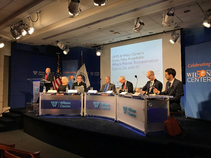

U.S. Mariner Mental Health Needs During Covid-19 Survey
Posted On: February 1, 2021
The CMTS COVID-19 Working Group (C-19 WG) encourages mariners from all segments of the U.S. maritime industry to take ten minutes to anonymously complete the “Mariner Mental Health Needs during Covid-19” online survey at https://redcap.link/mariners.
The confidential survey asks mariners a variety of questions about COVID-19, mental health, and their experiences and feelings when aboard a vessel during the challenges of this worldwide pandemic. No mariner identification data will be collected. Survey participation from a significant portion of the mariners in each industry segment is critical to understanding how the COVID-19 pandemic has affected their mental health. The survey is available from January 22 through May 31, 2021.
Results from the survey will be shared with federal agencies, vessel owners/operators, mariner unions, maritime training institutions, seafarer welfare organizations and MTS stakeholders to facilitate development of effective solutions that benefit our mariners’ mental well-being.
Mariner unions, vessel operators, vessel owners, mariner training institutions and industry associations are requested to encourage and facilitate the prompt participation of their mariners in this survey. MTS stakeholders are requested to widely distribute this announcement within the U.S. maritime industry.
The survey is being conducted independently by Dr. Marissa Baker, Assistant Professor & Industrial Hygiene Program Director, University of Washington School of Public Health. Individual responses will be kept confidential at the School. The survey allows mariners to skip any question which they do not wish to answer.
This survey is supported by Centers for Disease Prevention & Control (CDC) and the COVID-19 Working Group (C-19 WG). The C-19 WG serves as the CMTS forum for facilitating high-level interagency discussion, communication, and actions in support of the MTS under and after COVID-19. The following resources were developed by the C-19 WG for mariners and the U.S. Marine Transportation System:
CMTS COVID-19 Working Group Nov 18, 2020 Webinar: COVID-19 Testing Strategies for U.S. Merchant Mariners - Slides
Catalog of COVID-19 Federal Guidance and References for the U.S. Maritime Industry
Catalog of COVID-19 Best Management Practices for the U.S. Maritime Industry
Catalog of Mental Health Resources for U.S. Merchant Mariners and Critical Workforce in the Marine Transportation System
The Ship Operations Cooperative Program (SOCP) - whose members include vessel owners/operators, mariner unions, maritime academies, maritime training institutions, classification societies, other maritime industry stakeholders and government agencies - is also actively supporting this project to enhance the mental well-being of U.S. mariners.
For more information on this survey, please click here. Please email any questions, comments, or concerns regarding this mariner survey to Dr. Marissa Baker, University of Washington, at bakermg@uw.edu and to C19WG@cmts.gov.
TRB R&D Conference, “Advancing the MTS through Automation and Autonomous Technologies: Trends, Applications and Challenges
Posted On: January 01, 2021 Event Details: Monday, March 15-17, 2021
The 6th Biennial Marine Transportation System Innovative Science and Technology Conference, hosted by the CMTS and the Transportation Research Board, will be held virtually from March 15-17, 2021. The theme of the upcoming conference is “Advancing the Marine Transportation System through Automation and Autonomous Technologies: Trends, Applications and Challenges," and it will showcase current and emerging innovative science and technologies related to maritime transportation.
Join your colleagues from government, industry, and academia to examine the rapidly evolving applications of autonomous and automated technologies. Through engaged discussion and debate with noted thought leaders, directed panelists, and leading scientists and engineers, we will explore the direction, technical challenges, enabling technologies, and potential hurdles to successfully navigate the future of the marine transportation system.
See the attached flyer for more information. To view the program or register for the conference, please visit: https://trb.secure-platform.com/a/page/marinetransport.
For more information, please contact Scott Brotemarkle (sbrotemarkle@nas.edu).
At the CMTS Coordinating Board meeting held Thursday, July 23, 2020, RDML Tim Gallaudet, immediate past chair of the CMTS Coordinating Board and Deputy Administrator of NOAA, presented the annual report for his term as chair from August 1, 2019 to July 31, 2020. The report was subsequently transmitted to Transportation Secretary Elaine L. Chao by the current CMTS Coordinating Board chair, RDML Rich Timme, Assistant Commandant for Prevention Policy, US Coast Guard.
In his correspondence to Secretary Chao, RMDL Timme noted our appreciation for the opportunity to work with the DOT Under Secretary and RADM Mark Buzby, MARAD, in support of the report, Goals and Objectives for a Stronger Maritime Nation: Report to Congress (February 2020). Other highlights of the past year include:
Released the report, A Ten-Year Projection of Maritime Activity in the U.S. Arctic Region, 2020-2030 which included industry outreach. (September 2019)
Released the 4th Edition of the Federal Funding Handbook for Marine Transportation System Infrastructure. (November 2019)
Released the report, An Economic Analysis of Spending in Marine Transportation System Infrastructure in collaboration with INFORUM at the University of Maryland. (April 2020)
Developed and transmitted through your office Dr. Peter Navarro, Director, White House Office of Trade and Manufacturing Policy, the annual status report on Military to Mariner efforts in accordance with EO #13860. (July 2020)
Annual Report
Now available: An Economic Analysis of Spending on Marine Transportation System (MTS) Infrastructure
Posted On: April 04, 2020
A new report, An Economic Analysis of Spending on Marine Transportation System (MTS) Infrastructure (April 2020) conducted by Inforum at the University of Maryland for the U.S. Committee on the Marine Transportation System (CMTS), demonstrates that increasing investment in marine transportation system (MTS) infrastructure above a business-as-usual scenario will improve U.S. economic performance. Specifically, we can expect additional MTS investment to deliver higher levels of GDP, more jobs, increased incomes, improved trade performance, and higher productivity.
“This report illustrates that our marine transportation system is an essential part of the Blue Economy and the Nation’s GDP, making a persuasive argument for how infrastructure investment could aid in economic growth,” said RDML Tim Gallaudet, Assistant Secretary of Commerce for Oceans and Atmosphere, Deputy Administrator of the National Oceanic and Atmospheric Administration, and Chair of the CMTS Coordinating Board.
Compared to a baseline forecast that assumes continuation of limited public infrastructure investment that leads to reduced efficiencies and higher costs, the report finds the following:
In the short term, enhancing the level of infrastructure spending would boost jobs by between 54.7 thousand and 182.5 thousand jobs in 2025, depending on the scenario.
By 2030, the level of real GDP would rise between about $8 billion and $41 billion in 2012 dollars.
Because of cumulative effects through time, by 2045 infrastructure investments could produce economy-wide returns of between $2 and $3 per every $1 spent, after adjusting for inflation.
The quantitative analysis underpinning the study uses data that spans a historical period ending in 2019, before the onslaught of the COVID-19 pandemic. Therefore, while the basic conclusions of the study remain valid, the magnitude of the benefits of MTS investment will likely be smaller. For example, the report notes that, in the short term, additional investment will boost demand in the economy as construction workers spend their incomes on goods and services. Under current COVID-19 response practices, however, there will be fewer operating businesses where construction workers can spend their incomes, at least for a time. This means the short-term demand boost stemming from capital outlays will be smaller than estimated in the report.
It is important to note that the study finds most of the gains to GDP from 2020-2045 - 80 percent, in fact - will be due to higher productivity (output per hour worked), and the rest to increased employment. This should provide some comfort that under these changing economic times, even if employees only gradually return to work, the country should still expect to see noticeable gains in GDP.
For questions or comments, please contact us at Pat.Mutschler@cmts.gov or 202-366-3612.
Now Available: 4th Edition of the Federal Funding Handbook for Marine Transportation System Infrastructure
Posted On: November 3, 2019
The U.S. Committee on the Marine Transportation System (CMTS) has completed its biennial update of the “Federal Funding Handbook for Marine Transportation System Infrastructure,” one of the most downloaded items on the CMTS website. This is the fourth iteration of the Handbook since it was first produced in 2013.
“The CMTS Federal Funding Handbook connects Federal resources to our stakeholders for investment in, and strengthening of, our marine transportation system infrastructure,” said RDML Tim Gallaudet, Deputy Director of the National Oceanic and Atmospheric Administration and Chair of the CMTS Coordinating Board.
The 4th edition of the CMTS Federal Funding Handbook contains 75 authorized funding, financing, and technical assistance programs for infrastructure in the marine transportation system. This document is a compilation of existing and recent Federal funding programs. New to this edition, the funding programs are now divided into seven distinct categories (in comparison to four categories in the 3rd edition). These categories are:
Infrastructure
Economic Development
Energy
Resilience
Safety and Security
Environment and Sustainability
Research and Development
Of note, this edition includes the Port Infrastructure Development Program, which includes $292.7 million in new discretionary grant funding for coastal seaports.
The purpose of this Handbook is to serve as a value-added tool for local and non-federal level practitioners as well as Federal stakeholders. No program is endorsed nor are the programs listed all-inclusive. This is a living document that will be updated periodically. To that end, we welcome stakeholder input to ensure this handbook continues to be a valuable and relevant document. Please direct your feedback to the CMTS at MTSinfo@cmts.gov.
Recommended Citation: U.S. Committee on the Marine Transportation System (2019). Federal Funding Handbook for Marine Transportation System Infrastructure. Washington, D.C., p. 60.
Hill Brief: Designing Maritime Resilience, Lessons from the 2017 Hurricane Season
Posted On: June 1, 2019 Event Details: Monday, June 1, 2019 0200-300 ET Location: Rayburn House Office Building
We are pleased to present the Actions and Accomplishments of the CMTS during the Chairmanship of MG Scott A. Spellmon, Deputy Commanding General for Civil and Emergency Operations, U.S. Army Corps of Engineers. MG Spellmon served as Chair of the CMTS Coordinating Board from August 1, 2018 through July 31, 2019.
Date: Monday, June 10, 2019 2:00 – 3:00 PM
Location: Rayburn House Office Building Room #2103
Questions may be directed to Katherine.F.Chambers@usace.army.mil. Download the RIAT.
Projecting Arctic Marine Traffic of Tomorrow: A Recap of the "Arctic Shipping: Boom, Bust, or Baseline?" Technical Workshop
Posted On: December 5, 2018
Last month, the CMTS and the U.S. Arctic Research Commission, with support from the Wilson Center's Polar Institute, hosted the technical workshop, "Arctic Shipping: Boom, Bust, or Baseline?" Over the course of this two-day workshop, 35 participants from the Federal family, academia, industry, other Arctic Nations, and Tribal interests discussed the future of vessel activity in U.S. Arctic waters. This workshop and the information gleaned from it are critical first steps to updating forecasts of vessel activity in U.S. Arctic waters, which the CMTS's Arctic Marine Transportation Integrated Action Team will complete in 2019.
Following an introduction by CMTS Executive Director, Helen Brohl, Dr. Lawson Brigham, Ph.D., Distinguished Professor of Geography and Arctic Policy at the University of Alaska Fairbanks and retired USCG Captain, and Dr. Alyson Azzara, Ph.D., International Trade Specialist within the U.S. Department of Transportation's Maritime Administration, provided an overview of two past efforts to understand the role of shipping in tomorrow's Arctic. The Arctic Council's 2009 Arctic Marine Shipping Assessment provided a detailed account of current and future marine activity across the entirety of the Arctic, with an eye to the challenges of marine safety and environmental protection in such an extreme and sensitive environment. In 2015, as part of the National Strategy for the Arctic Region Implementation Plan, the CMTS delivered The 10-Year Projection Study of Maritime Activity in the U.S. Arctic which projected vessel activity in the U.S. Arctic region of interest out until 2025.
Much has changed in the region, however, since the release of these two reports, and for the remainder of the workshop, participants provided their input on three key questions to guide the next projection report: (1) What drives (and will drive) vessel activity in the U.S. Arctic? (2) Which drivers are the most important to consider? and (3) How can those drivers be measured?
Workshop participants spent the afternoon of the first day discussing all the possible drivers of Arctic vessel activity, from the development of non-traditional natural resources to global commodity prices. In small break-out groups, participants discussed ways to ranking the listed drivers as a function of the probability to happen and the potential impact on marine vessel activity in U.S. Arctic waters. The qualitative discussions of the first day gave way to thorough quantitative discussions on the second day as participants shared resources and metrics to incorporate into the next iteration of projecting vessel activity in the U.S. Arctic.
The CMTS extends a warm thank you to all participants and to the U.S. Arctic Research Commission and the Wilson Center. If you would like to provide input on what you think drives Arctic vessel activity or to learn more about this effort, please contact MTSInfo@cmts.gov or call Sarah Harrison at 202-366-7053.
PRecap of the CMTS and Wilson Center’s Ocean Policy Roundtable: What’s Maritime Transportation Got to Do with It?
Posted On: December 5, 2018
The CMTS and the Wilson Center Polar Initiative hosted the Ocean Policy Roundtable, "What's Maritime Transportation Got to Do with It?" on Wednesday, September 26 at the Wilson Center. Nearly 75 participants from Federal government, academia, industry, and regional stakeholders joined us for a roundtable discussion on how marine transportation intersects ocean policy.

CMTS and Wilson Center, Ocean Policy Roundtable
Left to Right: Mr. Mike Sfraga, Ms. Helen Brohl, RDML Shep Smith, RADM Jon White, RADM Dave Titley, Mr. Pål Somdalen, and Mr. Malte Søndergaard
Following a welcome from Mr. Mike Sfraga of the Wilson Center, Mr. Deerin Babb-Brott from the White House Office of Science and Technology Policy provided an overview of the recent Executive Order outlining the new Ocean Policy to advance the economic, security, and environmental interests of the United States.
Our speakers, including RDML Shep Smith, RADM Jon White, RADM Dave Titley, Mr. Pål Somdalen, and Mr. Malte Søndergaard, each provided their unique perspective on where marine transportation fits into the wider discussion of ocean policy in a conversation moderated by CMTS Executive Director, Ms. Helen Brohl. They discussed a wide range of issues including the possibility of a deep-draft port in Nome, the changing environment in the Arctic, and how new technology and big data is revolutionizing marine transportation in unimaginable ways, among many other topics. Our speakers highlighted the need for not just a whole-of-government approach, but also a cooperative international approach to maximize efforts in ensuring sustainable use of the ocean while maintaining a healthy and growing marine transportation system. Ultimately, the conversations concluded that the maritime transportation system is incredibly vital to ocean policy.
Since our inception 13 years ago, the CMTS has worked to improve coordination across agencies responsible for the United States marine transportation system, and we believe that we have enabled our Federal partners to work towards that mission. Through the CMTS' journey, it has always been vital to keep our stakeholders informed, and with this Ocean Policy Roundtable and future events like this, we will provide our stakeholders the opportunity to better understand the work we do in support of the maritime industry.
To learn more, please view the footage of this event, at: https://www.wilsoncenter.org/event/ocean-policy-roundtable-whats-marine-transportation-got-to-do-it
Opening Remarks
- Mr. Mike Sfraga, Wilson Center Polar Initiative
- Mr. Deerin Babb-Brott, White House Office of Science and Technology Policy
Introduction
Ms. Helen Brohl, U.S. Committee on the Marine Transportation System
Panel:
- RDML Shep Smith, Director of the Office of Coast Survey, NOAA
- RADM (Ret.) Jon White, President and CEO, Consortium for Ocean Leadership
- RADM (Ret.) Dave Titley, PhD, Director of the Center for Solutions to Weather and Climate Risk, Pennsylvania State University
- Mr. Pål Somdalen, Counselor for Trade and Industrial Affairs, Royal Norwegian Embassy
- Mr. Malte Søndergaard, Maritime Advisor, Royal Danish Embass
CMTS Annual Report: 2017-2018 Now Available
Posted On: September 2, 2018
We are pleased to present the Actions and Accomplishments of the CMTS during the Chairmanship of RADM Mark H. Buzby, Maritime Administrator. RADM Buzby served as Chair of the CMTS Coordinating Board from August 1, 2017 through July 31, 2018
Under his Chairmanship, the CMTS published the National Strategy for the Marine Transportation System: Channeling the Maritime Advantage (2017-2022), which was signed by Transportation Secretary Elaine L. Chao in October 2017. Other notable accomplishments include:
- Completion of the Maritime Transportation Extreme Weather Task Force: A Report to Congress,
- Co-hosting of 5th Biennial Conference on Research and Development for the Marine Transportation System with the Transportation Research Board,
- Development of the 3rd edition of the Federal Funding Handbook for MTS Infrastructure,
- Enhanced CMTS operations by updating the charter and rolling out new branding,
- Organization of the first MTS Industry Roundtable on Maritime Infrastructure to better connect with stakeholders, and
- Creation of resources and webinars across all CMTS teams to inform our partners of critical MTS topics
Water Infrastructure Roundtable
Posted On: Posted On: May 5, 2017
The CMTS Industry Outreach Workshop was held on Monday, June 11 at the U.S. Department of Transportation and was attended by nearly 70 marine transportation system (MTS) stakeholders and partners. Eleven Federal partners shared their vision of maritime infrastructure from Administration priorities to ongoing Agency actions. Our partners addressed how informational infrastructure is increasing the safety and efficiency of the MTS, Federal efforts to increase data sharing, the need for mariners to support our MTS, new developments in the Federal fleet, and Arctic infrastructure needs, among other topics. The conversations emphasized the diversity of the Agency roles within the MTS and the importance of interagency coordination in this arena.
On May 19, 2017, the CMTS and the Water Infrastructure Working Group hosted an engaging interagency discussion on the state of water-related infrastructure. Representatives from the U.S. Department of Transportation, U.S. Army Corps of Engineers, U.S. Bureau of Reclamation, U.S. Department of Agriculture, and the U.S. Environmental Protection Agency participated.
This event was held in conjunction with Infrastructure Week 2017—a national week of events, media coverage, and education and advocacy efforts to elevate infrastructure as a critical issue impacting all Americans. A recording of the event can be viewed
here.
Posted On: Posted On: Dec 2, 2015 Event Details: Tuesday December 2, 2015
The CMTS 10th Anniversary Roundtable: Reflecting Forward, held on Friday, November 20, 2015, at the Department of Transportation Headquarters, was attended by nearly 80 marine transportation system (MTS) partners and stakeholders. Two panels of past and present leaders of the CMTS discussed the Committee's origins, its accomplishments over the past 10 years, and the future needs of the MTS. They also kicked off enhanced stakeholder engagement under the 2015-2016 CMTS work plan.
CMTS Releases Report: "Innovative Technologies for a Resilient Marine Transportation System
Posted On: Posted On: March 1, 2015
The CMTS has issued the summary report of the biennial Marine Transportation System (MTS) research conference,
Innovative Technologies for a Resilient Marine Transportation System, held with the Transportation Research Board on June 24-26, 2014.
The purpose of the conference was to work toward a more resilient MTS through the identification of current innovative technologies, gaps in knowledge, or future technology needs; to determine current and future disturbances to the MTS; and to uncover opportunities for collaboration. This report is a research and development call to action to help guide near-term MTS research by assimilating broad ideas that were presented during the conference keynote and plenary panels and introducing the innovative emerging technologies that are being developed by academia, the federal government, and private industry.
CMTS U.S. Arctic Marine Transportation System Report
Posted On: Posted On: March 1, 2015
The CMTS has issued the summary report of the biennial Marine Transportation System (MTS) research conference,
Innovative Technologies for a Resilient Marine Transportation System, held with the Transportation Research Board on June 24-26, 2014.
On July 30, 2013, U.S. Transportation Secretary and CMTS Chair Anthony R. Foxx submitted to President Obama the CMTS report on the U.S. Arctic marine transportation system (MTS).